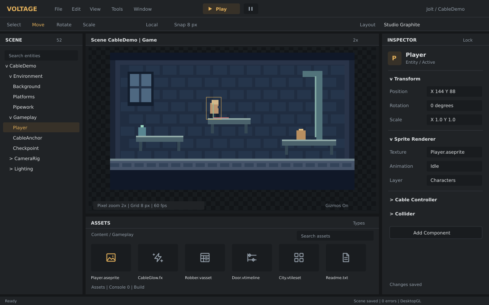

A clearer editor around the pixel game
Keep Dear ImGui for the next presentation pass. The current architecture can support a professional editor without changing the engine host. A different framework becomes worthwhile if accessibility, localization, or native desktop workflows become product requirements.
These are design sketches, not implemented editor themes. All three preserve a pixel art game viewport with sharp integer scaling and use readable, resolution independent editor controls.

Studio Graphite
Charcoal surfaces, a warm accent, 26-28 px rows, and grouped inspector fields. A predictable scene / viewport / inspector layout with assets below the viewport. Console and build output become tabs with error counts.
Open the full SVG
Blueprint
Cool slate and cyan for a technical workspace. Compact hierarchy and asset folders leave room for timeline, profiler, coordinates, and diagnostics. Good for scripting, effects, and animation work.
Open the full SVG
Atelier
Warm charcoal and sage for content creation. Larger asset tiles, a visible tile palette, and quieter diagnostics put painting and animation ahead of logs. The game remains pixelated; the surrounding UI stays sharp.
Open the full SVG
What the current architecture allows
Editor : Core runs inside the MonoGame host. ImGuiManager is a global manager and final render delegate; it binds the game render target into the viewport, computes viewport bounds, and maps input between window and scene coordinates. ImGuiRenderer owns font textures, UI texture bindings, and MonoGame rendering. The overlay is a presentation choice, not a requirement that all editor widgets look like the pixel game.
The editor has approximately 73,000 lines in 261 C# files, with about 25,000 lines in its windows, inspectors, and ImGui integration. Those counts indicate the scale of a port; they are not a rewrite estimate by themselves. The current inspector implementations, popup behavior, drag and drop, plugins, and gateway UI registration all use ImGui directly.
Scene data, serialization, runtime components, asset formats, math, and most build logic can remain. Reusable editor session services should expose selection, commands, undo, assets, and build progress without depending on a GUI toolkit. Engine code must continue to have no dependency on the editor.
Framework choices and expected effort
Planning estimates for one experienced developer familiar with this codebase, with Linux, Windows, and macOS support. These are ranges for prioritization, not delivery promises. New features, additional developers, plugin compatibility, and platform issues can change the schedule.
| Direction | What it gains | What it costs | Estimated effort |
|---|---|---|---|
| Polish Dear ImGui Recommended first | Clear typography, consistent spacing, restrained colors, stronger panel hierarchy, better defaults, and purpose built asset browsing. Keeps the current viewport, input, inspectors, and plugins. | A shared style and widget layer plus changes to individual windows. ImGui does not automatically provide platform accessibility or native desktop semantics. | 2-4 weeks for a shared foundation and first polished shell; 6-10 weeks total for key windows, HiDPI behavior, and consistent workflows. Accessibility would be additional work. |
| Avalonia | A C# desktop UI with layout, styling, localization infrastructure, and platform accessibility support. A good candidate for a document oriented editor and richer desktop forms. | Rewrite presentation, inspectors, drag and drop, focus/input, dialogs, and plugin UI integration. Prototype MonoGame rendering and lifecycle inside the new host. Choose and validate a docking solution; neither MonoGame nor existing ImGui inspectors transfer automatically. | 2-4 weeks for a viewport and input feasibility prototype; approximately 4-9 months for production parity across three operating systems, including plugin and gateway integration. |
| Qt | Mature desktop widgets and docking via QDockWidget, with strong desktop conventions and tooling. | Most editor presentation still needs rewriting. The current C# engine needs a supported interop or process boundary, an additional build/distribution stack, and a deliberate licensing choice. | Approximately 6-12 months for broad parity, depending heavily on the interop approach. A poor first choice solely to improve appearance. |
| Selective native tools | Improve file dialogs and specific workflows while keeping the fast game viewport and current editor session. | Maintain focus and modal boundaries. Separate process tools need a small explicit protocol and ownership rules. | Days to weeks per isolated workflow. Useful incrementally; it does not replace the editor's overall presentation pass. |
The gains from Avalonia would primarily be desktop interaction, accessibility, and richer forms. It would not make the pixel game render faster or remove the need for engine specific tooling. WPF would give up native Linux and macOS support and does not fit the stated platform goals.
The viewport is the first migration gate
Avalonia's NativeControlHost can host platform native views, but native content sits above Avalonia drawing and cannot support arbitrary Avalonia overlays, clipping, transforms, or transparency. OpenGlControlBase owns a GL lifecycle; it is not a drop-in replacement for MonoGame's SDL window and graphics device. GPU interop is another option, but the existing samples do not establish a working MonoGame integration.
A prototype must prove GPU context ownership, resize and disposal, monitor scaling, mouse capture, keyboard focus, viewport coordinates, and gizmos on all three platforms. A solution that copies the full game frame back to the CPU every frame should not become the production baseline. Embedding an SDL child window also requires deliberate overlay and z-order design.
A separate editor process can isolate failures from the game host, but it introduces scene/session synchronization, command routing, object identity, and viewport transport. Existing gateway commands can support prototypes and external tools; they do not by themselves provide a full speed shared GPU viewport.
A practical presentation pass on ImGui
- Typography and scale: bundle a suitably licensed UI font, add explicit punctuation and required language glyph ranges, and rebuild the atlas for display scale. Keep editor DPI independent of game pixel zoom. Use a separate monospace font for code and logs. Do not enlarge every game texture to make the UI readable.
- Shared visual rules: centralize neutral surfaces, semantic warning/error colors, a restrained accent, row heights, spacing, field widths, icons, and disabled states. Extend
ThemeManager/VoltageEditorThemesand commonGuiwidgets instead of styling each window differently. - Default layouts: ship general, technical, and art workspaces, plus a reset layout action. Keep the inspector aligned, make assets wider when needed, and give the console a badge/tab rather than a permanent oversized pane.
- Key windows: clean up inspector groups, asset search and previews, scene hierarchy affordances, the build/effect setup dialogs, and timeline controls. Keep stable widget IDs and gateway registration so automation remains useful.
- Runtime separation: give Play mode a clear state, preserve selection across play/stop, and ensure background build progress cannot block UI input. Keep the scene's point sampling while choosing the appropriate filtering for high resolution UI assets.
Upgrade ImGui.NET, the native cimgui binary, and the renderer adapter as a coordinated compatibility task. The currently pinned integration is 1.89.5; a package upgrade should not be mixed into a cosmetic pass without validating input, font, docking, and plugin behavior.
Included fixes and further validation
The accompanying change replaces 84 static text tokens in the editor and engine diagnostics containing unsupported dashes, arrows, ellipses, triangles, record dots, degree symbols, and middle-dot separators with readable ASCII. Seven original monochrome asset icons cover generic files, textures, shader effects, Tiled maps, tilesets, timelines, and data assets. Existing scene, prefab, script, Aseprite, and audio icons remain; plugin supplied icons still take precedence.
These fixes do not add full Unicode font coverage. Dynamic names in Greek, Cyrillic, or other scripts still need the font work above. The visual concepts are review artifacts; no framework port or global theme replacement is included.
Validation: Editor-Debug and Editor-Release build with zero errors. A syntax-aware scan finds no remaining non-ASCII string tokens in editor or engine source. Live Linux editor checks show all seven new icon types, using actual project assets and an isolated shader/generic-file fixture. SVG structure, PNG transparency, and local report links are verified. The gateway suite passes all 24 tests. Explicit storage overrides now isolate test profiles from legacy user layouts; the Linux fixture supplies an undocked legacy layout to prevent regression.
- Check icon size and contrast at 100%, 150%, and 200% display scale on Linux, Windows, and macOS.
- Test localized file/entity names and text input after introducing a broader font atlas.
- Validate new default workspaces at multiple window sizes and display scales, and retain existing custom layouts across project loading and restarts.
- For shader setup, validate native macOS, package manager denial, network interruption, AOT/full asset exports, and GPU effects rendering. The existing effects documentation lists the setup validation already completed.
Source references
Repository architecture: Editor.cs, ImGuiManager.cs, ImGuiManager.Impl.cs, ImGuiRenderer.cs, and asset browser documentation.
Framework documentation: Dear ImGui FAQ; Avalonia native interop and embedding limits; Avalonia OpenGlControlBase; Avalonia accessibility; Avalonia GPU interop samples; Qt QDockWidget; Qt licensing options; MonoGame platforms.